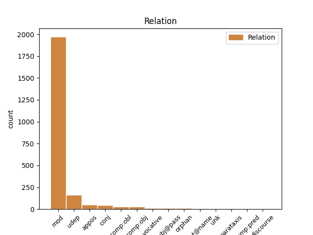
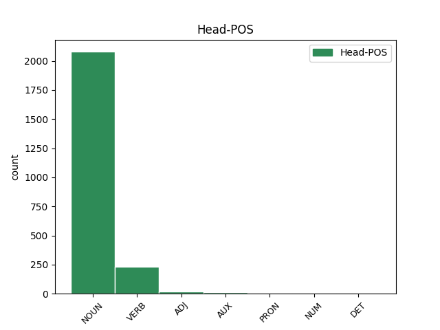
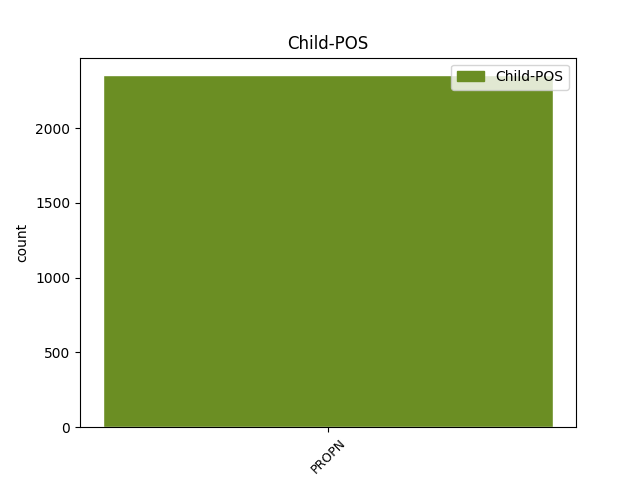

Distribution of features within this leaf



Agreement Rules sorted by frequency.
- When the dependent token is the modifer(mod) of the head token, and the head token is NOUN and the dependent token is PROPN.
1 No _ _ _ _ 0 _ _ _
2 arheoloģiskiem _ _ _ _ 0 _ _ _
3 izrakumiem _ _ _ _ 0 _ _ _
4 gan _ _ _ _ 0 _ _ _
5 redzams _ _ _ _ 0 _ _ _
6 , _ _ _ _ 0 _ _ _
7 ka _ _ _ _ 0 _ _ _
8 liela _ _ _ _ 0 _ _ _
9 dzimstība _ _ _ _ 0 _ _ _
10 neapstiprinās _ _ _ _ 0 _ _ _
11 ( _ _ _ _ 0 _ _ _
12 spriežot _ _ _ _ 0 _ _ _
13 pēc _ _ _ _ 0 _ _ _
14 māju _ _ _ _ 0 _ _ _
15 lieluma _ _ _ _ 0 _ _ _
16 ) _ _ _ _ 0 _ _ _
17 , _ _ _ _ 0 _ _ _
18 jo _ _ _ _ 0 _ _ _
19 liels _ _ _ _ 0 _ _ _
20 iedzīvotāju _ _ _ _ 0 _ _ _
21 skaita _ _ _ _ 0 _ _ _
22 pieaugums _ _ _ _ 0 _ _ _
23 līdzinātos _ _ _ _ 0 _ _ _
24 Āzijas Āzija PROPN npfsg4 Case=Gen|Gender=Fem|Number=Sing 25 mod _ LvtbNodeId=a-z99-p67s5w24
25 dzimstības dzimstība NOUN ncfsg4 Case=Gen|Gender=Fem|Number=Sing 0 _ _ _
26 sprādzienam _ _ _ _ 0 _ _ _
27 . _ _ _ _ 0 _ _ _
1 Kā _ _ _ _ 0 _ _ _
2 atzīst _ _ _ _ 0 _ _ _
3 vairāki _ _ _ _ 0 _ _ _
4 VD _ _ _ _ 0 _ _ _
5 teologi _ _ _ _ 0 _ _ _
6 , _ _ _ _ 0 _ _ _
7 VD _ _ _ _ 0 _ _ _
8 tekstiem _ _ _ _ 0 _ _ _
9 piemērotāka _ _ _ _ 0 _ _ _
10 ir _ _ _ _ 0 _ _ _
11 skandināvu _ _ _ _ 0 _ _ _
12 pētnieka _ _ _ _ 0 _ _ _
13 Johana Johans PROPN npmsg1 Case=Gen|Gender=Masc|Number=Sing 18 udep _ LvtbNodeId=a-z99-p16s1w13
14 Galtunga _ _ _ _ 0 _ _ _
15 ( _ _ _ _ 0 _ _ _
16 Galtung _ _ _ _ 0 _ _ _
17 ) _ _ _ _ 0 _ _ _
18 piedāvātā piedāvāt VERB vmnpdfsnpsypn Aspect=Perf|Case=Nom|Definite=Def|Degree=Pos|Gender=Fem|Number=Sing|Polarity=Pos|Tense=Past|VerbForm=Part|Voice=Pass 0 _ _ _
19 teorija _ _ _ _ 0 _ _ _
20 par _ _ _ _ 0 _ _ _
21 vardarbību _ _ _ _ 0 _ _ _
22 , _ _ _ _ 0 _ _ _
23 kurā _ _ _ _ 0 _ _ _
24 izšķir _ _ _ _ 0 _ _ _
25 tiešu _ _ _ _ 0 _ _ _
26 , _ _ _ _ 0 _ _ _
27 strukturālu _ _ _ _ 0 _ _ _
28 un _ _ _ _ 0 _ _ _
29 kultūras _ _ _ _ 0 _ _ _
30 vardarbību _ _ _ _ 0 _ _ _
31 . _ _ _ _ 0 _ _ _
1 Nespējot _ _ _ _ 0 _ _ _
2 pārvarēt _ _ _ _ 0 _ _ _
3 objektīvas _ _ _ _ 0 _ _ _
4 un _ _ _ _ 0 _ _ _
5 subjektīvas _ _ _ _ 0 _ _ _
6 pretrunas _ _ _ _ 0 _ _ _
7 starp _ _ _ _ 0 _ _ _
8 kolektīvu _ _ _ _ 0 _ _ _
9 , _ _ _ _ 0 _ _ _
10 teātra _ _ _ _ 0 _ _ _
11 vadītāju vadītājs NOUN ncmsa1 Case=Acc|Gender=Masc|Number=Sing 0 _ _ _
12 , _ _ _ _ 0 _ _ _
13 tobrīd _ _ _ _ 0 _ _ _
14 visu _ _ _ _ 0 _ _ _
15 laiku _ _ _ _ 0 _ _ _
16 starptautiski _ _ _ _ 0 _ _ _
17 ievērojamāko _ _ _ _ 0 _ _ _
18 Latvijas _ _ _ _ 0 _ _ _
19 teātra _ _ _ _ 0 _ _ _
20 režisoru _ _ _ _ 0 _ _ _
21 Ādolfu Ādolfs PROPN npmsa1 Case=Acc|Gender=Masc|Number=Sing 11 appos _ LvtbNodeId=a-z83-p16s4w21
22 Šapiro _ _ _ _ 0 _ _ _
23 un _ _ _ _ 0 _ _ _
24 Kultūras _ _ _ _ 0 _ _ _
25 ministriju _ _ _ _ 0 _ _ _
26 , _ _ _ _ 0 _ _ _
27 kultūras _ _ _ _ 0 _ _ _
28 ministrs _ _ _ _ 0 _ _ _
29 Raimonds _ _ _ _ 0 _ _ _
30 Pauls _ _ _ _ 0 _ _ _
31 1992. _ _ _ _ 0 _ _ _
32 gadā _ _ _ _ 0 _ _ _
33 pieņem _ _ _ _ 0 _ _ _
34 lēmumu _ _ _ _ 0 _ _ _
35 par _ _ _ _ 0 _ _ _
36 Jaunatnes _ _ _ _ 0 _ _ _
37 teātra _ _ _ _ 0 _ _ _
38 likvidēšanu _ _ _ _ 0 _ _ _
39 . _ _ _ _ 0 _ _ _
1 Kopā _ _ _ _ 0 _ _ _
2 ar _ _ _ _ 0 _ _ _
3 arhitektūru _ _ _ _ 0 _ _ _
4 un _ _ _ _ 0 _ _ _
5 būvniecību _ _ _ _ 0 _ _ _
6 izglītības _ _ _ _ 0 _ _ _
7 nozare _ _ _ _ 0 _ _ _
8 ir _ _ _ _ 0 _ _ _
9 tā _ _ _ _ 0 _ _ _
10 , _ _ _ _ 0 _ _ _
11 kur _ _ _ _ 0 _ _ _
12 ir _ _ _ _ 0 _ _ _
13 visaugstākā _ _ _ _ 0 _ _ _
14 atbilstība _ _ _ _ 0 _ _ _
15 starp _ _ _ _ 0 _ _ _
16 iegūto _ _ _ _ 0 _ _ _
17 izglītību _ _ _ _ 0 _ _ _
18 un _ _ _ _ 0 _ _ _
19 turpmāko _ _ _ _ 0 _ _ _
20 nodarbošanos _ _ _ _ 0 _ _ _
21 ( _ _ _ _ 0 _ _ _
22 Latvijas _ _ _ _ 0 _ _ _
23 Universitāte _ _ _ _ 0 _ _ _
24 , _ _ _ _ 0 _ _ _
25 Latvijas _ _ _ _ 0 _ _ _
26 Universitātes _ _ _ _ 0 _ _ _
27 aģentūra _ _ _ _ 0 _ _ _
28 “ _ _ _ _ 0 _ _ _
29 Latvijas _ _ _ _ 0 _ _ _
30 Universitātes _ _ _ _ 0 _ _ _
31 Filozofijas _ _ _ _ 0 _ _ _
32 un _ _ _ _ 0 _ _ _
33 socioloģijas _ _ _ _ 0 _ _ _
34 institūts institūts NOUN ncmsn1 Case=Nom|Gender=Masc|Number=Sing 0 _ _ _
35 ” _ _ _ _ 0 _ _ _
36 , _ _ _ _ 0 _ _ _
37 SIA _ _ _ _ 0 _ _ _
38 Baltkonsults Baltkonsults PROPN npmsn1 Case=Nom|Gender=Masc|Number=Sing 34 conj _ LvtbNodeId=a-z46-p12s3w38|SpaceAfter=No
39 , _ _ _ _ 0 _ _ _
40 2007 _ _ _ _ 0 _ _ _
41 ) _ _ _ _ 0 _ _ _
42 . _ _ _ _ 0 _ _ _
1 Es _ _ _ _ 0 _ _ _
2 turēšu turēt VERB vmnift31san Evident=Fh|Mood=Ind|Number=Sing|Person=1|Polarity=Pos|Tense=Fut|VerbForm=Fin|Voice=Act 0 _ _ _
3 svētus _ _ _ _ 0 _ _ _
4 un _ _ _ _ 0 _ _ _
5 ievērošu _ _ _ _ 0 _ _ _
6 Latvijas _ _ _ _ 0 _ _ _
7 Satversmi Satversme PROPN npfsa5 Case=Acc|Gender=Fem|Number=Sing 2 comp:obj _ LvtbNodeId=a-s6-p8s3w7
8 un _ _ _ _ 0 _ _ _
9 valsts _ _ _ _ 0 _ _ _
10 likumus _ _ _ _ 0 _ _ _
11 . _ _ _ _ 0 _ _ _
1 28. _ _ _ _ 0 _ _ _
2 novembrī _ _ _ _ 0 _ _ _
3 Ventspils _ _ _ _ 0 _ _ _
4 Rātslaukumā _ _ _ _ 0 _ _ _
5 kopā _ _ _ _ 0 _ _ _
6 ar _ _ _ _ 0 _ _ _
7 Jūrmalas _ _ _ _ 0 _ _ _
8 teātra _ _ _ _ 0 _ _ _
9 aktieriem _ _ _ _ 0 _ _ _
10 tika _ _ _ _ 0 _ _ _
11 dots dot VERB vmnpdmsnpsnpn Aspect=Perf|Case=Nom|Definite=Ind|Degree=Pos|Gender=Masc|Number=Sing|Polarity=Pos|Tense=Past|VerbForm=Part|Voice=Pass 0 _ _ _
12 STARTS _ _ _ _ 0 _ _ _
13 Ziemassvētku _ _ _ _ 0 _ _ _
14 Sajūtu _ _ _ _ 0 _ _ _
15 maratonam _ _ _ _ 0 _ _ _
16 “ _ _ _ _ 0 _ _ _
17 Lapzeme Lapzeme PROPN npfsn5 Case=Nom|Gender=Fem|Number=Sing 11 comp:obl _ LvtbNodeId=a-p9822-p1s1w17
18 – _ _ _ _ 0 _ _ _
19 Ventspils _ _ _ _ 0 _ _ _
20 2015 _ _ _ _ 0 _ _ _
21 ” _ _ _ _ 0 _ _ _
22 un _ _ _ _ 0 _ _ _
23 tika _ _ _ _ 0 _ _ _
24 iedegta _ _ _ _ 0 _ _ _
25 Ventspils _ _ _ _ 0 _ _ _
26 pilsētas _ _ _ _ 0 _ _ _
27 galvenā _ _ _ _ 0 _ _ _
28 Ziemassvētku _ _ _ _ 0 _ _ _
29 egle _ _ _ _ 0 _ _ _
30 . _ _ _ _ 0 _ _ _
1 Es _ _ _ _ 0 _ _ _
2 saku _ _ _ _ 0 _ _ _
3 : _ _ _ _ 0 _ _ _
4 „ _ _ _ _ 0 _ _ _
5 Terij Terija PROPN npfsv4 Case=Voc|Gender=Fem|Number=Sing 11 vocative _ LvtbNodeId=a-s25-p14s10w5|SpaceAfter=No
6 , _ _ _ _ 0 _ _ _
7 lūdzu _ _ _ _ 0 _ _ _
8 , _ _ _ _ 0 _ _ _
9 es _ _ _ _ 0 _ _ _
10 te _ _ _ _ 0 _ _ _
11 mēģinu mēģināt VERB vonipi31san Evident=Fh|Mood=Ind|Number=Sing|Person=1|Polarity=Pos|Tense=Pres|VerbForm=Fin|Voice=Act 0 _ _ _
12 uzcept _ _ _ _ 0 _ _ _
13 olu _ _ _ _ 0 _ _ _
14 . _ _ _ _ 0 _ _ _
15 ” _ _ _ _ 0 _ _ _
1 Uz _ _ _ _ 0 _ _ _
2 nepieciešamību _ _ _ _ 0 _ _ _
3 ņemt _ _ _ _ 0 _ _ _
4 vērā _ _ _ _ 0 _ _ _
5 skolu _ _ _ _ 0 _ _ _
6 tīkla _ _ _ _ 0 _ _ _
7 struktūru _ _ _ _ 0 _ _ _
8 , _ _ _ _ 0 _ _ _
9 prognozējot _ _ _ _ 0 _ _ _
10 skolotāju _ _ _ _ 0 _ _ _
11 skaitu _ _ _ _ 0 _ _ _
12 , _ _ _ _ 0 _ _ _
13 norāda _ _ _ _ 0 _ _ _
14 arī _ _ _ _ 0 _ _ _
15 Tiešis _ _ _ _ 0 _ _ _
16 V. _ _ _ _ 0 _ _ _
17 , _ _ _ _ 0 _ _ _
18 Šaltenis _ _ _ _ 0 _ _ _
19 V. _ _ _ _ 0 _ _ _
20 un _ _ _ _ 0 _ _ _
21 Dzemida _ _ _ _ 0 _ _ _
22 G. _ _ _ _ 0 _ _ _
23 , _ _ _ _ 0 _ _ _
24 veidojot _ _ _ _ 0 _ _ _
25 modeli _ _ _ _ 0 _ _ _
26 skolotāju _ _ _ _ 0 _ _ _
27 skaita _ _ _ _ 0 _ _ _
28 noteikšanai noteikšana NOUN ncfsd4 Case=Dat|Gender=Fem|Number=Sing 0 _ _ _
29 Lietuvā Lietuva PROPN npfsl4 Case=Loc|Gender=Fem|Number=Sing 28 udep _ LvtbNodeId=a-z46-p14s1w29
30 ( _ _ _ _ 0 _ _ _
31 Tiešis _ _ _ _ 0 _ _ _
32 , _ _ _ _ 0 _ _ _
33 2003 _ _ _ _ 0 _ _ _
34 ) _ _ _ _ 0 _ _ _
35 . _ _ _ _ 0 _ _ _
1 Šarlote Šarlote PROPN npfsn5 Case=Nom|Gender=Fem|Number=Sing 2 subj@pass _ LvtbNodeId=a-p6354-p3s1w1
2 kristīta kristīt VERB vmnpdfsnpsnpn Aspect=Perf|Case=Nom|Definite=Ind|Degree=Pos|Gender=Fem|Number=Sing|Polarity=Pos|Tense=Past|VerbForm=Part|Voice=Pass 0 _ _ _
3 tajā _ _ _ _ 0 _ _ _
4 pašā _ _ _ _ 0 _ _ _
5 tērpā _ _ _ _ 0 _ _ _
6 , _ _ _ _ 0 _ _ _
7 kurā _ _ _ _ 0 _ _ _
8 tika _ _ _ _ 0 _ _ _
9 kristīts _ _ _ _ 0 _ _ _
10 viņas _ _ _ _ 0 _ _ _
11 brālis _ _ _ _ 0 _ _ _
12 - _ _ _ _ 0 _ _ _
13 princis _ _ _ _ 0 _ _ _
14 Džordžs _ _ _ _ 0 _ _ _
15 . _ _ _ _ 0 _ _ _
1 Esmu būt AUX vcnipii1san Evident=Fh|Mood=Ind|Number=Sing|Person=1|Polarity=Pos|Tense=Pres|VerbForm=Fin|Voice=Act 0 _ _ _
2 dzimusi _ _ _ _ 0 _ _ _
3 un _ _ _ _ 0 _ _ _
4 uzaugusi _ _ _ _ 0 _ _ _
5 Latvijā Latvija PROPN npfsl4 Case=Loc|Gender=Fem|Number=Sing 1 udep _ LvtbNodeId=a-p733-p6s2w5|SpaceAfter=No
6 , _ _ _ _ 0 _ _ _
7 šeit _ _ _ _ 0 _ _ _
8 dzīvoju _ _ _ _ 0 _ _ _
9 piekto _ _ _ _ 0 _ _ _
10 gadu _ _ _ _ 0 _ _ _
11 . _ _ _ _ 0 _ _ _
1 Priecīgu _ _ _ _ 0 _ _ _
2 ziņu _ _ _ _ 0 _ _ _
3 pavēstījis _ _ _ _ 0 _ _ _
4 grupas _ _ _ _ 0 _ _ _
5 The _ _ _ _ 0 _ _ _
6 Hobos _ _ _ _ 0 _ _ _
7 līderis _ _ _ _ 0 _ _ _
8 Rolands _ _ _ _ 0 _ _ _
9 Ūdris _ _ _ _ 0 _ _ _
10 – _ _ _ _ 0 _ _ _
11 viņš _ _ _ _ 0 _ _ _
12 apņēmis _ _ _ _ 0 _ _ _
13 par _ _ _ _ 0 _ _ _
14 sievu _ _ _ _ 0 _ _ _
15 ilggadējo _ _ _ _ 0 _ _ _
16 draudzeni draudzene NOUN ncfsa5 Case=Acc|Gender=Fem|Number=Sing 0 _ _ _
17 , _ _ _ _ 0 _ _ _
18 ventspilnieci _ _ _ _ 0 _ _ _
19 , _ _ _ _ 0 _ _ _
20 dziedātāju _ _ _ _ 0 _ _ _
21 un _ _ _ _ 0 _ _ _
22 rakstnieci _ _ _ _ 0 _ _ _
23 Ilonu Ilona PROPN npfsa4 Case=Acc|Gender=Fem|Number=Sing 16 flat@name _ LvtbNodeId=a-p9793-p1s1w23
24 Balodi _ _ _ _ 0 _ _ _
25 . _ _ _ _ 0 _ _ _
1 Gadadienas _ _ _ _ 0 _ _ _
2 ietvaros _ _ _ _ 0 _ _ _
3 UNESCO _ _ _ _ 0 _ _ _
4 LNK _ _ _ _ 0 _ _ _
5 pasniedz _ _ _ _ 0 _ _ _
6 un _ _ _ _ 0 _ _ _
7 atklāj _ _ _ _ 0 _ _ _
8 UNESCO _ _ _ _ 0 _ _ _
9 programmas _ _ _ _ 0 _ _ _
10 " _ _ _ _ 0 _ _ _
11 Pasaules _ _ _ _ 0 _ _ _
12 atmiņa _ _ _ _ 0 _ _ _
13 " _ _ _ _ 0 _ _ _
14 atpazīstamības _ _ _ _ 0 _ _ _
15 zīmes _ _ _ _ 0 _ _ _
16 muzejiem _ _ _ _ 0 _ _ _
17 , _ _ _ _ 0 _ _ _
18 kas _ _ _ _ 0 _ _ _
19 jau _ _ _ _ 0 _ _ _
20 glabā _ _ _ _ 0 _ _ _
21 kādu _ _ _ _ 0 _ _ _
22 no _ _ _ _ 0 _ _ _
23 programmas _ _ _ _ 0 _ _ _
24 starptautiskajā _ _ _ _ 0 _ _ _
25 vai _ _ _ _ 0 _ _ _
26 Latvijas Latvija PROPN npfsg4 Case=Gen|Gender=Fem|Number=Sing 27 mod _ LvtbNodeId=a-p3772-p7s2w26
27 nacionālajā nacionāls ADJ armslyp Case=Loc|Definite=Def|Degree=Pos|Gender=Masc|Number=Sing 0 _ _ _
28 reģistrā _ _ _ _ 0 _ _ _
29 iekļautu _ _ _ _ 0 _ _ _
30 nomināciju _ _ _ _ 0 _ _ _
31 , _ _ _ _ 0 _ _ _
32 tādā _ _ _ _ 0 _ _ _
33 veidā _ _ _ _ 0 _ _ _
34 apliecinot _ _ _ _ 0 _ _ _
35 muzeja _ _ _ _ 0 _ _ _
36 sasniegumus _ _ _ _ 0 _ _ _
37 un _ _ _ _ 0 _ _ _
38 piederību _ _ _ _ 0 _ _ _
39 šai _ _ _ _ 0 _ _ _
40 programmai _ _ _ _ 0 _ _ _
41 , _ _ _ _ 0 _ _ _
42 kā _ _ _ _ 0 _ _ _
43 arī _ _ _ _ 0 _ _ _
44 izceļ _ _ _ _ 0 _ _ _
45 to _ _ _ _ 0 _ _ _
46 kā _ _ _ _ 0 _ _ _
47 būtisku _ _ _ _ 0 _ _ _
48 Latvijas _ _ _ _ 0 _ _ _
49 vēstures _ _ _ _ 0 _ _ _
50 liecību _ _ _ _ 0 _ _ _
51 glabātāju _ _ _ _ 0 _ _ _
52 un _ _ _ _ 0 _ _ _
53 nozīmīgu _ _ _ _ 0 _ _ _
54 UNESCO _ _ _ _ 0 _ _ _
55 LNK _ _ _ _ 0 _ _ _
56 sadarbības _ _ _ _ 0 _ _ _
57 partneri _ _ _ _ 0 _ _ _
58 . _ _ _ _ 0 _ _ _
1 Avoti _ _ _ _ 0 _ _ _
2 vēsta _ _ _ _ 0 _ _ _
3 , _ _ _ _ 0 _ _ _
4 ka _ _ _ _ 0 _ _ _
5 Kembridžas _ _ _ _ 0 _ _ _
6 hercogi _ _ _ _ 0 _ _ _
7 uzskata _ _ _ _ 0 _ _ _
8 , _ _ _ _ 0 _ _ _
9 ka _ _ _ _ 0 _ _ _
10 šī _ _ _ _ 0 _ _ _
11 ir _ _ _ _ 0 _ _ _
12 perfekta _ _ _ _ 0 _ _ _
13 izvēle izvēle NOUN ncfsn5 Case=Nom|Gender=Fem|Number=Sing 0 _ _ _
14 mazajam _ _ _ _ 0 _ _ _
15 Džordžam Džordžs PROPN npmsd1 Case=Dat|Gender=Masc|Number=Sing 13 comp:obl _ LvtbNodeId=a-p5667-p4s2w15|SpaceAfter=No
16 . _ _ _ _ 0 _ _ _
1 Aktrise _ _ _ _ 0 _ _ _
2 Mila _ _ _ _ 0 _ _ _
3 Kunisa _ _ _ _ 0 _ _ _
4 paziņojusi _ _ _ _ 0 _ _ _
5 , _ _ _ _ 0 _ _ _
6 ka _ _ _ _ 0 _ _ _
7 ļoti _ _ _ _ 0 _ _ _
8 daudz _ _ _ _ 0 _ _ _
9 līdzekļu _ _ _ _ 0 _ _ _
10 viņa viņa PRON pp3fsnn Case=Nom|Gender=Fem|Number=Sing|Person=3|PronType=Prs 0 _ _ _
11 un _ _ _ _ 0 _ _ _
12 aktieris _ _ _ _ 0 _ _ _
13 Eštons Eštons PROPN npmsn1 Case=Nom|Gender=Masc|Number=Sing 10 conj _ LvtbNodeId=a-p6128-p1s1w13
14 Kačers _ _ _ _ 0 _ _ _
15 ietaupījuši _ _ _ _ 0 _ _ _
16 uz _ _ _ _ 0 _ _ _
17 kāzu _ _ _ _ 0 _ _ _
18 rēķina _ _ _ _ 0 _ _ _
19 . _ _ _ _ 0 _ _ _
1 Pirmais _ _ _ _ 0 _ _ _
2 finišējis finišēt VERB vmnpdmsnasnpn Aspect=Perf|Case=Nom|Definite=Ind|Degree=Pos|Gender=Masc|Number=Sing|Polarity=Pos|Tense=Past|VerbForm=Part|Voice=Act 0 _ _ _
3 austrietis _ _ _ _ 0 _ _ _
4 Raudašls _ _ _ _ 0 _ _ _
5 , _ _ _ _ 0 _ _ _
6 Mankins Mankins PROPN npmsn1 Case=Nom|Gender=Masc|Number=Sing 2 conj _ LvtbNodeId=a-p467-p27s3w6
7 ar _ _ _ _ 0 _ _ _
8 Muzičenko _ _ _ _ 0 _ _ _
9 – _ _ _ _ 0 _ _ _
10 tikai _ _ _ _ 0 _ _ _
11 sestie _ _ _ _ 0 _ _ _
12 . _ _ _ _ 0 _ _ _
1 Toties _ _ _ _ 0 _ _ _
2 ceļojuma _ _ _ _ 0 _ _ _
3 cena _ _ _ _ 0 _ _ _
4 viennozīmīgi _ _ _ _ 0 _ _ _
5 runā _ _ _ _ 0 _ _ _
6 par _ _ _ _ 0 _ _ _
7 labu labs ADJ afmsanp Case=Acc|Definite=Ind|Degree=Pos|Gender=Masc|Number=Sing 0 _ _ _
8 Siguldai Sigulda PROPN npfsd4 Case=Dat|Gender=Fem|Number=Sing 7 unk _ LvtbNodeId=a-p3281-p5s5w8
9 – _ _ _ _ 0 _ _ _
10 50 _ _ _ _ 0 _ _ _
11 kilometru _ _ _ _ 0 _ _ _
12 brauciens _ _ _ _ 0 _ _ _
13 izmaksās _ _ _ _ 0 _ _ _
14 pusotru _ _ _ _ 0 _ _ _
15 latu _ _ _ _ 0 _ _ _
16 , _ _ _ _ 0 _ _ _
17 savukārt _ _ _ _ 0 _ _ _
18 par _ _ _ _ 0 _ _ _
19 tāda _ _ _ _ 0 _ _ _
20 paša _ _ _ _ 0 _ _ _
21 garuma _ _ _ _ 0 _ _ _
22 ekskursiju _ _ _ _ 0 _ _ _
23 Šveicē _ _ _ _ 0 _ _ _
24 būs _ _ _ _ 0 _ _ _
25 jāmaksā _ _ _ _ 0 _ _ _
26 desmit _ _ _ _ 0 _ _ _
27 reizes _ _ _ _ 0 _ _ _
28 vairāk _ _ _ _ 0 _ _ _
29 . _ _ _ _ 0 _ _ _
1 Aktieris _ _ _ _ 0 _ _ _
2 pārgulējis _ _ _ _ 0 _ _ _
3 ar _ _ _ _ 0 _ _ _
4 meiteni _ _ _ _ 0 _ _ _
5 jau _ _ _ _ 0 _ _ _
6 11 _ _ _ _ 0 _ _ _
7 gadu _ _ _ _ 0 _ _ _
8 vecumā _ _ _ _ 0 _ _ _
9 , _ _ _ _ 0 _ _ _
10 meitenes _ _ _ _ 0 _ _ _
11 vārds _ _ _ _ 0 _ _ _
12 bijis būt AUX vcnpdmsnasnpn Aspect=Perf|Case=Nom|Definite=Ind|Degree=Pos|Gender=Masc|Number=Sing|Polarity=Pos|Tense=Past|VerbForm=Part|Voice=Act 0 _ _ _
13 Grēta Grēta PROPN npfsn4 Case=Nom|Gender=Fem|Number=Sing 12 comp:pred _ LvtbNodeId=a-p6123-p8s1w13|SpaceAfter=No
14 . _ _ _ _ 0 _ _ _
1 Iepriekš _ _ _ _ 0 _ _ _
2 Īres _ _ _ _ 0 _ _ _
3 valdes _ _ _ _ 0 _ _ _
4 priekšsēdētājs _ _ _ _ 0 _ _ _
5 bija _ _ _ _ 0 _ _ _
6 Deniss _ _ _ _ 0 _ _ _
7 Gorba _ _ _ _ 0 _ _ _
8 ( _ _ _ _ 0 _ _ _
9 PCTVL _ _ _ _ 0 _ _ _
10 ) _ _ _ _ 0 _ _ _
11 , _ _ _ _ 0 _ _ _
12 no _ _ _ _ 0 _ _ _
13 īrnieku _ _ _ _ 0 _ _ _
14 vidus _ _ _ _ 0 _ _ _
15 valdē _ _ _ _ 0 _ _ _
16 darbojās _ _ _ _ 0 _ _ _
17 Baltā Baltā ADJ affslyp Case=Loc|Definite=Def|Degree=Pos|Gender=Fem|Number=Sing 0 _ _ _
18 un _ _ _ _ 0 _ _ _
19 Genādijs Genādijs PROPN npmsn1 Case=Nom|Gender=Masc|Number=Sing 17 conj _ LvtbNodeId=a-p3771-p11s1w19
20 Kotovs _ _ _ _ 0 _ _ _
21 , _ _ _ _ 0 _ _ _
22 savukārt _ _ _ _ 0 _ _ _
23 no _ _ _ _ 0 _ _ _
24 izīrētāju _ _ _ _ 0 _ _ _
25 vidus _ _ _ _ 0 _ _ _
26 - _ _ _ _ 0 _ _ _
27 Jakāns _ _ _ _ 0 _ _ _
28 un _ _ _ _ 0 _ _ _
29 Meikališs _ _ _ _ 0 _ _ _
30 . _ _ _ _ 0 _ _ _
1 Hērdas Hērda PROPN npfpn4 Case=Nom|Gender=Fem|Number=Plur 2 comp:pred _ LvtbNodeId=a-p6517-p6s1w1
2 iesniegtajos iesniegt VERB vmnpdmplpsypn Aspect=Perf|Case=Loc|Definite=Def|Degree=Pos|Gender=Masc|Number=Plur|Polarity=Pos|Tense=Past|VerbForm=Part|Voice=Pass 0 _ _ _
3 dokumentos _ _ _ _ 0 _ _ _
4 apgalvots _ _ _ _ 0 _ _ _
5 , _ _ _ _ 0 _ _ _
6 ka _ _ _ _ 0 _ _ _
7 maijā _ _ _ _ 0 _ _ _
8 Deps _ _ _ _ 0 _ _ _
9 viņai _ _ _ _ 0 _ _ _
10 « _ _ _ _ 0 _ _ _
11 vardarbīgi _ _ _ _ 0 _ _ _
12 uzbruka _ _ _ _ 0 _ _ _
13 » _ _ _ _ 0 _ _ _
14 pāra _ _ _ _ 0 _ _ _
15 kopīgajā _ _ _ _ 0 _ _ _
16 dzīvoklī _ _ _ _ 0 _ _ _
17 . _ _ _ _ 0 _ _ _
1 Vāciešus _ _ _ _ 0 _ _ _
2 tiešām _ _ _ _ 0 _ _ _
3 uztver _ _ _ _ 0 _ _ _
4 kā _ _ _ _ 0 _ _ _
5 atbrīvotājus _ _ _ _ 0 _ _ _
6 un _ _ _ _ 0 _ _ _
7 sagaida _ _ _ _ 0 _ _ _
8 , _ _ _ _ 0 _ _ _
9 ka _ _ _ _ 0 _ _ _
10 tiks _ _ _ _ 0 _ _ _
11 atjaunota _ _ _ _ 0 _ _ _
12 Rietumeiropa Rietumeiropa PROPN npfsd4 Case=Dat|Gender=Fem|Number=Sing|Typo=Yes 13 udep _ CorrectForm=Rietumeiropai|CorrectionType=Spelling|LvtbNodeId=a-z90-p317s2w12
13 raksturīgā raksturīgs ADJ affsnyp Case=Nom|Definite=Def|Degree=Pos|Gender=Fem|Number=Sing 0 _ _ _
14 saimniekošanas _ _ _ _ 0 _ _ _
15 sistēma _ _ _ _ 0 _ _ _
16 ar _ _ _ _ 0 _ _ _
17 privātīpašumu _ _ _ _ 0 _ _ _
18 centrā _ _ _ _ 0 _ _ _
19 . _ _ _ _ 0 _ _ _
1 Un _ _ _ _ 0 _ _ _
2 kāpēc _ _ _ _ 0 _ _ _
3 gan _ _ _ _ 0 _ _ _
4 ne _ _ _ _ 0 _ _ _
5 , _ _ _ _ 0 _ _ _
6 ja _ _ _ _ 0 _ _ _
7 šis _ _ _ _ 0 _ _ _
8 burvju _ _ _ _ 0 _ _ _
9 vārdiņš _ _ _ _ 0 _ _ _
10 uz _ _ _ _ 0 _ _ _
11 vēlētāju _ _ _ _ 0 _ _ _
12 prātiem _ _ _ _ 0 _ _ _
13 iedarbojas _ _ _ _ 0 _ _ _
14 kā _ _ _ _ 0 _ _ _
15 narkotika _ _ _ _ 0 _ _ _
16 : _ _ _ _ 0 _ _ _
17 sak _ _ _ _ 0 _ _ _
18 , _ _ _ _ 0 _ _ _
19 nu _ _ _ _ 0 _ _ _
20 tik _ _ _ _ 0 _ _ _
21 būs _ _ _ _ 0 _ _ _
22 , _ _ _ _ 0 _ _ _
23 šis šis PRON pd3msnn Case=Nom|Gender=Masc|Number=Sing|Person=3|PronType=Dem 0 _ _ _
24 ( _ _ _ _ 0 _ _ _
25 Zatlers Zatlers PROPN npmsn1 Case=Nom|Gender=Masc|Number=Sing 23 parataxis _ LvtbNodeId=a-p12703-p3s8w25|SpaceAfter=No
26 , _ _ _ _ 0 _ _ _
27 Āboltiņa _ _ _ _ 0 _ _ _
28 , _ _ _ _ 0 _ _ _
29 Piebalgs _ _ _ _ 0 _ _ _
30 , _ _ _ _ 0 _ _ _
31 Vējonis _ _ _ _ 0 _ _ _
32 , _ _ _ _ 0 _ _ _
33 Straujuma _ _ _ _ 0 _ _ _
34 utt. _ _ _ _ 0 _ _ _
35 ) _ _ _ _ 0 _ _ _
36 visu _ _ _ _ 0 _ _ _
37 sareformēs _ _ _ _ 0 _ _ _
38 , _ _ _ _ 0 _ _ _
39 un _ _ _ _ 0 _ _ _
40 rīt _ _ _ _ 0 _ _ _
41 mēs _ _ _ _ 0 _ _ _
42 , _ _ _ _ 0 _ _ _
43 laimīgie _ _ _ _ 0 _ _ _
44 pavalstnieki _ _ _ _ 0 _ _ _
45 , _ _ _ _ 0 _ _ _
46 pamodīsimies _ _ _ _ 0 _ _ _
47 Leiputrijā _ _ _ _ 0 _ _ _
48 — _ _ _ _ 0 _ _ _
49 piena _ _ _ _ 0 _ _ _
50 un _ _ _ _ 0 _ _ _
51 medus _ _ _ _ 0 _ _ _
52 upes _ _ _ _ 0 _ _ _
53 krastos _ _ _ _ 0 _ _ _
54 . _ _ _ _ 0 _ _ _
1 Jaunajās _ _ _ _ 0 _ _ _
2 gaitās _ _ _ _ 0 _ _ _
3 esmu būt AUX vcnipii1san Evident=Fh|Mood=Ind|Number=Sing|Person=1|Polarity=Pos|Tense=Pres|VerbForm=Fin|Voice=Act 0 _ _ _
4 bijusi _ _ _ _ 0 _ _ _
5 Malaizijā _ _ _ _ 0 _ _ _
6 un _ _ _ _ 0 _ _ _
7 Indonēzijā _ _ _ _ 0 _ _ _
8 , _ _ _ _ 0 _ _ _
9 tagad _ _ _ _ 0 _ _ _
10 Latvijā Latvija PROPN npfsl4 Case=Loc|Gender=Fem|Number=Sing 3 conj _ LvtbNodeId=a-p13126-p5s2w10|SpaceAfter=No
11 . _ _ _ _ 0 _ _ _
1 Kāda _ _ _ _ 0 _ _ _
2 cita _ _ _ _ 0 _ _ _
3 amatpersona _ _ _ _ 0 _ _ _
4 izteikusies _ _ _ _ 0 _ _ _
5 , _ _ _ _ 0 _ _ _
6 ka _ _ _ _ 0 _ _ _
7 Mersers Mersers PROPN npmsn1 Case=Nom|Gender=Masc|Number=Sing 16 subj@pass _ LvtbNodeId=a-p16452-p9s1w7|SpaceAfter=No
8 , _ _ _ _ 0 _ _ _
9 kas _ _ _ _ 0 _ _ _
10 dzīvojis _ _ _ _ 0 _ _ _
11 kopā _ _ _ _ 0 _ _ _
12 ar _ _ _ _ 0 _ _ _
13 savu _ _ _ _ 0 _ _ _
14 māti _ _ _ _ 0 _ _ _
15 , _ _ _ _ 0 _ _ _
16 bijis būt AUX vcnpdmsnasnpn Aspect=Perf|Case=Nom|Definite=Ind|Degree=Pos|Gender=Masc|Number=Sing|Polarity=Pos|Tense=Past|VerbForm=Part|Voice=Act 0 _ _ _
17 apsēsts _ _ _ _ 0 _ _ _
18 ar _ _ _ _ 0 _ _ _
19 ieročiem _ _ _ _ 0 _ _ _
20 un _ _ _ _ 0 _ _ _
21 reliģiju _ _ _ _ 0 _ _ _
22 . _ _ _ _ 0 _ _ _
1 Kā _ _ _ _ 0 _ _ _
2 norāda _ _ _ _ 0 _ _ _
3 Latvijas _ _ _ _ 0 _ _ _
4 Tirdzniecības _ _ _ _ 0 _ _ _
5 un _ _ _ _ 0 _ _ _
6 rūpniecības _ _ _ _ 0 _ _ _
7 kameras _ _ _ _ 0 _ _ _
8 ( _ _ _ _ 0 _ _ _
9 LTRK _ _ _ _ 0 _ _ _
10 ) _ _ _ _ 0 _ _ _
11 valdes _ _ _ _ 0 _ _ _
12 priekšsēdētājs _ _ _ _ 0 _ _ _
13 Jānis _ _ _ _ 0 _ _ _
14 Endziņš _ _ _ _ 0 _ _ _
15 , _ _ _ _ 0 _ _ _
16 Krievijas _ _ _ _ 0 _ _ _
17 noteiktā _ _ _ _ 0 _ _ _
18 embargo _ _ _ _ 0 _ _ _
19 Eiropas _ _ _ _ 0 _ _ _
20 Savienības savienība NOUN ncfsg4 Case=Gen|Gender=Fem|Number=Sing 0 _ _ _
21 , _ _ _ _ 0 _ _ _
22 tajā _ _ _ _ 0 _ _ _
23 skaitā _ _ _ _ 0 _ _ _
24 , _ _ _ _ 0 _ _ _
25 Latvijas Latvija PROPN npfsg4 Case=Gen|Gender=Fem|Number=Sing 20 discourse _ CorrectionType=InsertedPunctAfter|LvtbNodeId=a-p18834-p6s1w24
26 precēm _ _ _ _ 0 _ _ _
27 un _ _ _ _ 0 _ _ _
28 izejvielām _ _ _ _ 0 _ _ _
29 , _ _ _ _ 0 _ _ _
30 negatīvā _ _ _ _ 0 _ _ _
31 ietekme _ _ _ _ 0 _ _ _
32 uz _ _ _ _ 0 _ _ _
33 valsts _ _ _ _ 0 _ _ _
34 tautsaimniecību _ _ _ _ 0 _ _ _
35 mērāma _ _ _ _ 0 _ _ _
36 miljonos _ _ _ _ 0 _ _ _
37 eiro _ _ _ _ 0 _ _ _
38 . _ _ _ _ 0 _ _ _
1 Savukārt _ _ _ _ 0 _ _ _
2 jau _ _ _ _ 0 _ _ _
3 tuvākajā _ _ _ _ 0 _ _ _
4 laikā _ _ _ _ 0 _ _ _
5 Pillar _ _ _ _ 0 _ _ _
6 pilnībā _ _ _ _ 0 _ _ _
7 pabeigs _ _ _ _ 0 _ _ _
8 vienu viens NUM mcsmsa Case=Acc|Gender=Masc|Number=Sing|NumType=Card 0 _ _ _
9 no _ _ _ _ 0 _ _ _
10 ekskluzīvākajiem _ _ _ _ 0 _ _ _
11 nekustamā _ _ _ _ 0 _ _ _
12 īpašuma _ _ _ _ 0 _ _ _
13 projektiem _ _ _ _ 0 _ _ _
14 visā _ _ _ _ 0 _ _ _
15 Rīgā _ _ _ _ 0 _ _ _
16 - _ _ _ _ 0 _ _ _
17 " _ _ _ _ 0 _ _ _
18 Elizabetes Elizabete PROPN npfsg5 Case=Gen|Gender=Fem|Number=Sing 8 mod _ LvtbNodeId=a-p3741-p8s1w18
19 Park _ _ _ _ 0 _ _ _
20 House _ _ _ _ 0 _ _ _
21 " _ _ _ _ 0 _ _ _
22 Rīgas _ _ _ _ 0 _ _ _
23 centrā _ _ _ _ 0 _ _ _
24 , _ _ _ _ 0 _ _ _
25 Elizabetes _ _ _ _ 0 _ _ _
26 ielā _ _ _ _ 0 _ _ _
27 21 _ _ _ _ 0 _ _ _
28 a _ _ _ _ 0 _ _ _
29 . _ _ _ _ 0 _ _ _
1 12.00 _ _ _ _ 0 _ _ _
2 - _ _ _ _ 0 _ _ _
3 sacensību _ _ _ _ 0 _ _ _
4 atklāšana _ _ _ _ 0 _ _ _
5 un _ _ _ _ 0 _ _ _
6 starts starts NOUN ncmsn1 Case=Nom|Gender=Masc|Number=Sing 0 _ _ _
7 ( _ _ _ _ 0 _ _ _
8 Pilssalā Pilssala PROPN npfsl4 Case=Loc|Gender=Fem|Number=Sing 6 parataxis _ LvtbNodeId=a-p3760-p2s5w8|SpaceAfter=No
9 ) _ _ _ _ 0 _ _ _
10 . _ _ _ _ 0 _ _ _
1 Tas tas PRON pd3msnn Case=Nom|Gender=Masc|Number=Sing|Person=3|PronType=Dem 0 _ _ _
2 , _ _ _ _ 0 _ _ _
3 kurš _ _ _ _ 0 _ _ _
4 to _ _ _ _ 0 _ _ _
5 saņem _ _ _ _ 0 _ _ _
6 , _ _ _ _ 0 _ _ _
7 piemēram _ _ _ _ 0 _ _ _
8 , _ _ _ _ 0 _ _ _
9 Uldis Uldis PROPN npmsn2 Case=Nom|Gender=Masc|Number=Sing 1 discourse _ LvtbNodeId=a-p3762-p48s13w9
10 Bērziņš _ _ _ _ 0 _ _ _
11 , _ _ _ _ 0 _ _ _
12 tā _ _ _ _ 0 _ _ _
13 ir _ _ _ _ 0 _ _ _
14 ļoti _ _ _ _ 0 _ _ _
15 adekvāta _ _ _ _ 0 _ _ _
16 lieta _ _ _ _ 0 _ _ _
17 . _ _ _ _ 0 _ _ _
1 Manfrēda _ _ _ _ 0 _ _ _
2 ģimene _ _ _ _ 0 _ _ _
3 līdz _ _ _ _ 0 _ _ _
4 ar _ _ _ _ 0 _ _ _
5 to _ _ _ _ 0 _ _ _
6 kļuvusi _ _ _ _ 0 _ _ _
7 par _ _ _ _ 0 _ _ _
8 vienu viens NUM mcsmsa Case=Acc|Gender=Masc|Number=Sing|NumType=Card 0 _ _ _
9 no _ _ _ _ 0 _ _ _
10 bagātākajām _ _ _ _ 0 _ _ _
11 Dienvidāfrikā Dienvidāfrika PROPN npfsl4 Case=Loc|Gender=Fem|Number=Sing 8 unk _ LvtbNodeId=a-p8498-p4s3w11|SpaceAfter=No
12 . _ _ _ _ 0 _ _ _
1 Lai _ _ _ _ 0 _ _ _
2 nepieļautu _ _ _ _ 0 _ _ _
3 šādu _ _ _ _ 0 _ _ _
4 situāciju _ _ _ _ 0 _ _ _
5 arī _ _ _ _ 0 _ _ _
6 Latvijā _ _ _ _ 0 _ _ _
7 , _ _ _ _ 0 _ _ _
8 es _ _ _ _ 0 _ _ _
9 aicinu _ _ _ _ 0 _ _ _
10 jūs _ _ _ _ 0 _ _ _
11 atbalstīt _ _ _ _ 0 _ _ _
12 šo _ _ _ _ 0 _ _ _
13 manu mans DET ps0msan Case=Acc|Gender=Masc|Number=Sing|Poss=Yes|PronType=Prs 0 _ _ _
14 un _ _ _ _ 0 _ _ _
15 Jāņa Jānis PROPN npmsg2 Case=Gen|Gender=Masc|Number=Sing 13 conj _ LvtbNodeId=a-s147-p8s4w15
16 Dombravas _ _ _ _ 0 _ _ _
17 priekšlikumu _ _ _ _ 0 _ _ _
18 . _ _ _ _ 0 _ _ _
1 Pirmoreiz _ _ _ _ 0 _ _ _
2 tas _ _ _ _ 0 _ _ _
3 ir _ _ _ _ 0 _ _ _
4 noticis _ _ _ _ 0 _ _ _
5 1917. _ _ _ _ 0 _ _ _
6 gadā _ _ _ _ 0 _ _ _
7 Krievijā _ _ _ _ 0 _ _ _
8 , _ _ _ _ 0 _ _ _
9 otru _ _ _ _ 0 _ _ _
10 reizi reize NOUN ncfsa5 Case=Acc|Gender=Fem|Number=Sing 0 _ _ _
11 - _ _ _ _ 0 _ _ _
12 1933. _ _ _ _ 0 _ _ _
13 gadā _ _ _ _ 0 _ _ _
14 Vācijā Vācija PROPN npfsl4 Case=Loc|Gender=Fem|Number=Sing 10 orphan _ LvtbNodeId=a-s38-p24s3w14|SpaceAfter=No
15 . _ _ _ _ 0 _ _ _
1 Konferences _ _ _ _ 0 _ _ _
2 materiāli _ _ _ _ 0 _ _ _
3 tika _ _ _ _ 0 _ _ _
4 apkopoti _ _ _ _ 0 _ _ _
5 Velisa Veliss PROPN npmsg1 Case=Gen|Gender=Masc|Number=Sing 20 mod _ LvtbNodeId=a-z82-p31s2w5
6 L. _ _ _ _ 0 _ _ _
7 Čeifa _ _ _ _ 0 _ _ _
8 ( _ _ _ _ 0 _ _ _
9 Wallace _ _ _ _ 0 _ _ _
10 L. _ _ _ _ 0 _ _ _
11 Chafe _ _ _ _ 0 _ _ _
12 ) _ _ _ _ 0 _ _ _
13 un _ _ _ _ 0 _ _ _
14 Džoannas _ _ _ _ 0 _ _ _
15 Nikolsas _ _ _ _ 0 _ _ _
16 ( _ _ _ _ 0 _ _ _
17 Johanna _ _ _ _ 0 _ _ _
18 Nichols _ _ _ _ 0 _ _ _
19 ) _ _ _ _ 0 _ _ _
20 sastādītajā sastādīt VERB vmnpdmslpsypn Aspect=Perf|Case=Loc|Definite=Def|Degree=Pos|Gender=Masc|Number=Sing|Polarity=Pos|Tense=Past|VerbForm=Part|Voice=Pass 0 _ _ _
21 rakstu _ _ _ _ 0 _ _ _
22 krājumā _ _ _ _ 0 _ _ _
23 „ _ _ _ _ 0 _ _ _
24 Evidentiality _ _ _ _ 0 _ _ _
25 : _ _ _ _ 0 _ _ _
26 The _ _ _ _ 0 _ _ _
27 linguistic _ _ _ _ 0 _ _ _
28 coding _ _ _ _ 0 _ _ _
29 of _ _ _ _ 0 _ _ _
30 epistemology _ _ _ _ 0 _ _ _
31 ” _ _ _ _ 0 _ _ _
32 ( _ _ _ _ 0 _ _ _
33 1986 _ _ _ _ 0 _ _ _
34 ) _ _ _ _ 0 _ _ _
35 . _ _ _ _ 0 _ _ _
1 Līdz _ _ _ _ 0 _ _ _
2 2012. _ _ _ _ 0 _ _ _
3 gada _ _ _ _ 0 _ _ _
4 nogalei _ _ _ _ 0 _ _ _
5 A. _ _ _ _ 0 _ _ _
6 Hermanis _ _ _ _ 0 _ _ _
7 iestudējis _ _ _ _ 0 _ _ _
8 piecdesmit _ _ _ _ 0 _ _ _
9 deviņas _ _ _ _ 0 _ _ _
10 izrādes _ _ _ _ 0 _ _ _
11 – _ _ _ _ 0 _ _ _
12 no _ _ _ _ 0 _ _ _
13 tām _ _ _ _ 0 _ _ _
14 deviņas _ _ _ _ 0 _ _ _
15 tapušas _ _ _ _ 0 _ _ _
16 Vācijā _ _ _ _ 0 _ _ _
17 , _ _ _ _ 0 _ _ _
18 četras _ _ _ _ 0 _ _ _
19 Austrijā _ _ _ _ 0 _ _ _
20 , _ _ _ _ 0 _ _ _
21 trīs _ _ _ _ 0 _ _ _
22 Šveicē _ _ _ _ 0 _ _ _
23 , _ _ _ _ 0 _ _ _
24 divas _ _ _ _ 0 _ _ _
25 Igaunijā _ _ _ _ 0 _ _ _
26 , _ _ _ _ 0 _ _ _
27 pa _ _ _ _ 0 _ _ _
28 vienai viens NUM mcsfsd Case=Dat|Gender=Fem|Number=Sing|NumType=Card 0 _ _ _
29 – _ _ _ _ 0 _ _ _
30 Itālijā Itālija PROPN npfsl4 Case=Loc|Gender=Fem|Number=Sing 28 orphan _ LvtbNodeId=a-z83-p3s1w30
31 un _ _ _ _ 0 _ _ _
32 Krievijā _ _ _ _ 0 _ _ _
33 . _ _ _ _ 0 _ _ _
1 Kā _ _ _ _ 0 _ _ _
2 norādījis norādīt VERB vmnpdmsnasnpn Aspect=Perf|Case=Nom|Definite=Ind|Degree=Pos|Gender=Masc|Number=Sing|Polarity=Pos|Tense=Past|VerbForm=Part|Voice=Act 0 _ _ _
3 tiesību _ _ _ _ 0 _ _ _
4 zinātnieks _ _ _ _ 0 _ _ _
5 Egils _ _ _ _ 0 _ _ _
6 Levits _ _ _ _ 0 _ _ _
7 [ _ _ _ _ 0 _ _ _
8 Levits Levits PROPN npmsn1 Case=Nom|Gender=Masc|Number=Sing 2 parataxis _ LvtbNodeId=a-z87-p29s1w8|SpaceAfter=No
9 , _ _ _ _ 0 _ _ _
10 2014 _ _ _ _ 0 _ _ _
11 ] _ _ _ _ 0 _ _ _
12 , _ _ _ _ 0 _ _ _
13 ģimene _ _ _ _ 0 _ _ _
14 ir _ _ _ _ 0 _ _ _
15 ļoti _ _ _ _ 0 _ _ _
16 sena _ _ _ _ 0 _ _ _
17 , _ _ _ _ 0 _ _ _
18 viena _ _ _ _ 0 _ _ _
19 no _ _ _ _ 0 _ _ _
20 sākotnējām _ _ _ _ 0 _ _ _
21 sabiedrības _ _ _ _ 0 _ _ _
22 vienībām _ _ _ _ 0 _ _ _
23 . _ _ _ _ 0 _ _ _
Disagree Examples:
1 Eshila _ _ _ _ 0 _ _ _
2 traģēdijā _ _ _ _ 0 _ _ _
3 stāstīts _ _ _ _ 0 _ _ _
4 par _ _ _ _ 0 _ _ _
5 Tēbu Tēbas PROPN npfdg4 Case=Gen|Gender=Fem|Number=Ptan 6 mod _ LvtbNodeId=a-c15-p36s2w5
6 valdnieka valdnieks NOUN ncmsg1 Case=Gen|Gender=Masc|Number=Sing 0 _ _ _
7 Edipa _ _ _ _ 0 _ _ _
8 dēlu _ _ _ _ 0 _ _ _
9 Eteokla _ _ _ _ 0 _ _ _
10 un _ _ _ _ 0 _ _ _
11 Polineika _ _ _ _ 0 _ _ _
12 cīņu _ _ _ _ 0 _ _ _
13 par _ _ _ _ 0 _ _ _
14 varu _ _ _ _ 0 _ _ _
15 . _ _ _ _ 0 _ _ _
1 Šie _ _ _ _ 0 _ _ _
2 Ziemeļāfrikāņu Ziemeļāfrikānis PROPN npmpg2 Case=Gen|Gender=Masc|Number=Plur 3 mod _ LvtbNodeId=a-c32-p7s3w2
3 izcelsmes izcelsme NOUN ncfsg5 Case=Gen|Gender=Fem|Number=Sing 0 _ _ _
4 zēni _ _ _ _ 0 _ _ _
5 ir _ _ _ _ 0 _ _ _
6 pat _ _ _ _ 0 _ _ _
7 sliktākā _ _ _ _ 0 _ _ _
8 situācijā _ _ _ _ 0 _ _ _
9 nekā _ _ _ _ 0 _ _ _
10 meitenes _ _ _ _ 0 _ _ _
11 . _ _ _ _ 0 _ _ _
1 Teiksim _ _ _ _ 0 _ _ _
2 , _ _ _ _ 0 _ _ _
3 valodnieku _ _ _ _ 0 _ _ _
4 un _ _ _ _ 0 _ _ _
5 etnologu _ _ _ _ 0 _ _ _
6 seminārā _ _ _ _ 0 _ _ _
7 Mazo _ _ _ _ 0 _ _ _
8 valodu _ _ _ _ 0 _ _ _
9 runātāju _ _ _ _ 0 _ _ _
10 grupu _ _ _ _ 0 _ _ _
11 kontakti kontakts NOUN ncmpn1 Case=Nom|Gender=Masc|Number=Plur 0 _ _ _
12 Igaunijā Igaunija PROPN npfsl4 Case=Loc|Gender=Fem|Number=Sing 11 mod _ LvtbNodeId=a-c41-p18s5w12
13 pirmoreiz _ _ _ _ 0 _ _ _
14 pateicu _ _ _ _ 0 _ _ _
15 , _ _ _ _ 0 _ _ _
16 ka _ _ _ _ 0 _ _ _
17 lībiešu _ _ _ _ 0 _ _ _
18 valoda _ _ _ _ 0 _ _ _
19 kā _ _ _ _ 0 _ _ _
20 dzimtā _ _ _ _ 0 _ _ _
21 valoda _ _ _ _ 0 _ _ _
22 ir _ _ _ _ 0 _ _ _
23 mirusi _ _ _ _ 0 _ _ _
24 , _ _ _ _ 0 _ _ _
25 ka _ _ _ _ 0 _ _ _
26 ir _ _ _ _ 0 _ _ _
27 notikusi _ _ _ _ 0 _ _ _
28 valodas _ _ _ _ 0 _ _ _
29 maiņa _ _ _ _ 0 _ _ _
30 . _ _ _ _ 0 _ _ _
1 Ja _ _ _ _ 0 _ _ _
2 Milna Milns PROPN npmsg1 Case=Gen|Gender=Masc|Number=Sing 3 mod _ LvtbNodeId=a-c55-p73s5w2
3 varoņos varonis NOUN ncmpl2 Case=Loc|Gender=Masc|Number=Plur 0 _ _ _
4 tiek _ _ _ _ 0 _ _ _
5 atrastas _ _ _ _ 0 _ _ _
6 populārākās _ _ _ _ 0 _ _ _
7 cilvēku _ _ _ _ 0 _ _ _
8 tipu _ _ _ _ 0 _ _ _
9 un _ _ _ _ 0 _ _ _
10 raksturu _ _ _ _ 0 _ _ _
11 iezīmes _ _ _ _ 0 _ _ _
12 , _ _ _ _ 0 _ _ _
13 tad _ _ _ _ 0 _ _ _
14 tādas _ _ _ _ 0 _ _ _
15 ir _ _ _ _ 0 _ _ _
16 sastopamas _ _ _ _ 0 _ _ _
17 arī _ _ _ _ 0 _ _ _
18 aktieros _ _ _ _ 0 _ _ _
19 , _ _ _ _ 0 _ _ _
20 un _ _ _ _ 0 _ _ _
21 rodas _ _ _ _ 0 _ _ _
22 jautājums _ _ _ _ 0 _ _ _
23 , _ _ _ _ 0 _ _ _
24 kādas _ _ _ _ 0 _ _ _
25 lomas _ _ _ _ 0 _ _ _
26 padodas _ _ _ _ 0 _ _ _
27 aktierim _ _ _ _ 0 _ _ _
28 , _ _ _ _ 0 _ _ _
29 kas _ _ _ _ 0 _ _ _
30 dzīvē _ _ _ _ 0 _ _ _
31 nes _ _ _ _ 0 _ _ _
32 sevī _ _ _ _ 0 _ _ _
33 Pūka _ _ _ _ 0 _ _ _
34 arhetipu _ _ _ _ 0 _ _ _
35 ? _ _ _ _ 0 _ _ _
1 Bet _ _ _ _ 0 _ _ _
2 kādas _ _ _ _ 0 _ _ _
3 tam _ _ _ _ 0 _ _ _
4 , _ _ _ _ 0 _ _ _
5 kam _ _ _ _ 0 _ _ _
6 raksturīgi _ _ _ _ 0 _ _ _
7 Ēzelīša Ēzelītis PROPN npmsg2 Case=Gen|Gender=Masc|Number=Sing 9 mod _ LvtbNodeId=a-c55-p73s6w7
8 Ī-ā _ _ _ _ 0 _ _ _
9 gājieni gājiens NOUN ncmpn1 Case=Nom|Gender=Masc|Number=Plur 0 _ _ _
10 ? _ _ _ _ 0 _ _ _